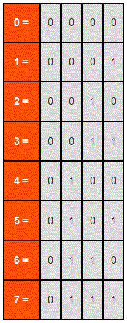
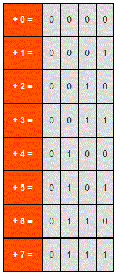
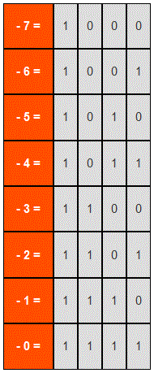
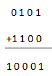
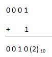

Now we have given this as an example to illustrate the representation of binary numbers. This is done to represent the positive numbers. But what if we want to represent the negative numbers in binary number system. The concept of negative sign is not there in binary number system. Although there have been disputes about representing negative numbers in binary number system. And for it various methods have been developed. The most popular of them all are 1's complement and 2's complement. Though 2's complement dominates the 1's complement in popularity but this is also used because of somewhat simpler design in hardware due to simpler concept. Now we will look at the method of 1's complement.
Number Representation
1's complement is a very easy method for representing negative numbers in binary number system. To represent any number which is negative first we have to consider the binary value of its positive magnitude in binary system, then we have to simply convert the 1’s with 0 and the 0s with 1 and we will get the 1's complement of that number which is also the negative value of that number. As we can see that this method is truly a method of complementing. We will have a clear idea if we look at some examples.
Example
First let us consider the positive numbers from 0 -7

Now the 1's complement of these numbers will be like as follows

Subtraction using 1's complement
The method of binary subtraction becomes very easy with the help of 1's complement. Now let us look at an example to understand subtraction using 1's complement.
Suppose A = (5)10 = (0 1 0 1)2
And B = (3)10 = (0 0 1 1)2
And we want to find out A - B
For this first we have to calculate 1's complement of B
1's complement of B = 1 1 0 0
Now we have to add the result with A

Now in the result we can see that there is an overflowing bit which we have to add with the remaining result

This is the desired result.
And when there will not be any overflowing digit the result obtained in the previous stage will be the answer.
 by
by